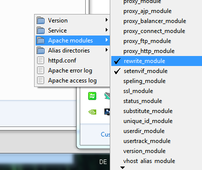

ZiscoERP - Powerfull HR,Accounting,CRM System
| Support : | uniquecoder007@gmail.com |
| Developer : | UniqueCoder |
Thank you for your interest in Ultimate Project Manager CRM.
Please read carefully the complete documentation before starting.
System Requrements
Your server need to meet the following requirements in order to run ZiscoERP - Powerfull HR,Accounting,CRM System .
- PHP 5.4+
- MYSQL 5+
- PHP Mcrypt Extention
- PHP MBString Extension
- PHP DOM Extension
- PHP GD Extension
- PHP MYSQL Extension
- PHP PDO Extention
- PHP CURL Extention
- Cronjob (in order to activate recurring invoices,autometic database backup , auto attendance etc)
Installation
Installation Process
- Unzip the downloaded folder
- Copy the files inside the zip folder : "ZiscoERP - Powerfull HR,Accounting,CRM System" into your server
- The auto web installer will start
- Make sure application/config/database.php to be writtable
- Enter your database settings
- Press the "Install" button.
- That's it!
Configure database connection
You need to have previously setup database from the cPanel.
Here is a good tutorial how to setup MySQL database in cPanel if you are not familiar with this.
- Login to cPanel by accessing www.yourdomain.com/cpanel and navigate go MySQL Databases.
- Create database first.
- Create user and setup your password.
- Add the user to database by selecting the database and the username.
Make sure you have checked All privileged when adding the user to database.
Local Server Installation
WAMP Server
If you like to install ZiscoERP - Powerfull HR,Accounting,CRM System on your local machine using WAMP Server you need to make sure to enable the apache rewrite_module. Click on the WAMP icon in your taskbar and click on Apache -> Apache modules -> rewrite_module

When the rewrite_module is not active you will get the following error message if you try to access the ZiscoERP - Powerfull HR,Accounting,CRM System installation tool.
Internal Server Error The server encountered an internal error or misconfiguration and was unable to complete your request. Please contact the server administrator, admin@localhost and inform them of the time the error occurred, and anything you might have done that may have caused the error. More information about this error may be available in the server error log.
You also need to make sure that the Curl extention is loaded. Just open your php.ini (...wamp\bin\apache\apache2.2.22\bin\php.ini) and remove the semicolon in front of the following extention: extension=php_curl.dll
Basic Cronjob
The basic cronjob should run at least once a day and is used in order to activate automated tasks like recurring invoices (subscriptions) and automatic database backup. Please refer to your web host providers FAQ in order to find out how to setup a cronjob/crontab (if your hosting package includes cronjobs).
The command should look like this: wget http://www.your-domain.com/cronjob
Your hosting package does not include cronjob/crontab? No problem! There are many websites who offer free cronjob services. One of them is www.setcronjob.com.
Email Ticket Cronjob
The email ticket cronjob should run every 10 minutes and is used in order to activate email tickets.
The command should look like this (you can find your cronjob command in Settings->Ticket->Postmaster cronjob link): wget http://www.your-domain.com/postmaster -O /dev/null
How to setup a cronjob in Plesk
If your web server is running Plesk you can check out the following instruction:
1. Go to Tools and Settings -> Scheduled Tasks
2. Click on Add new Task
3. Enter all the details like on the screenshot below. Important - change the cronjob link (Command) to your personal one. You can find it in ZiscoERP - Powerfull HR,Accounting,CRM System under Settings -> Cronjob
Note that you have to enter "wget" in front of the command link.
How to setup a cronjob in cPanel
Video by SiteServing
FAQ
If you get 404 page not found error after installation.
RewriteBase /
RewriteEngine On
RewriteBase /
RewriteCond %{REQUEST_FILENAME} !-f
RewriteCond %{REQUEST_FILENAME} !-d
RewriteRule ^(.*)$ index.php/$1 [L]
RewriteEngine On
RewriteBase /your_sub_folder/
RewriteCond %{REQUEST_FILENAME} !-f
RewriteCond %{REQUEST_FILENAME} !-d
RewriteRule ^(.*)$ index.php/$1 [L]
On Dreamhost you have to amend the .htaccess. If you get a “No Input File” error.
RewriteEngine On
RewriteBase /
RewriteCond %{REQUEST_FILENAME} !-f
RewriteCond %{REQUEST_FILENAME} !-d
RewriteRule ^(.*)$ index.php/?$1 [L]
If you get “no input file specified” error on goDaddy web host
<IfModule mod_rewrite.c>
RewriteEngine On
RewriteCond $1 !\.(gif|jpe?g|png)$ [NC]
RewriteCond %{REQUEST_FILENAME} !-f
RewriteCond %{REQUEST_FILENAME} !-d
RewriteRule ^(.*)$ /index.php?/$1 [L]
</IfModule>
If you get a 500 Error after the installation try the following as .htaccess
RewriteEngine on
RewriteCond %{REQUEST_FILENAME} !-f
RewriteCond %{REQUEST_FILENAME} !-d
RewriteCond $1 !^(index\.php|robots\.txt)
RewriteRule ^(.*)$ /index.php?/$1 [L]
If you get a 500 Error after the installation try the following as .htaccess
Another
Options +FollowSymLinks
RewriteEngine on
RewriteRule ^([a-z0-9_-]+)\.html$ index.php/page/$1 [L]
RewriteCond %{REQUEST_FILENAME} !-f
RewriteCond %{REQUEST_FILENAME} !-d
RewriteCond $1 !^(index\.php|asset|robots\.txt)
RewriteRule ^(.*)$ index.php?/$1 [QSA,L]
Source Code Structure
- Build up on powerful codeigniter php framework.
- For more info on codeigniter , go to : http://codeigniter.com/user_guide/
- Follows MVC model.
Included Files:
- Login php controller : application/controllers/login.php
- Data models in php file : application/models/ directory
- Configuration files : application/config/config.php
- Admin controller : application/controllers/admin/ directory
- Admin view files : application/views/admin/ directory
- client controller : application/controllers/client/ directory
- client view files : application/views/client/ directory
- Template css files : assets/css/ directory
- Template font files : assets/fonts/ directory
- Template js files : assets/js directory
- Template image files : assets/img/ directory
- images uploaded in : img/uploads/ directory
Customer Support
UniqueCoder is always ready to serve its valued clients.
For any kind of after sales support or customization - Don't hesitate to contact us at:
E-Mail: uniquecoder007@gmail.com